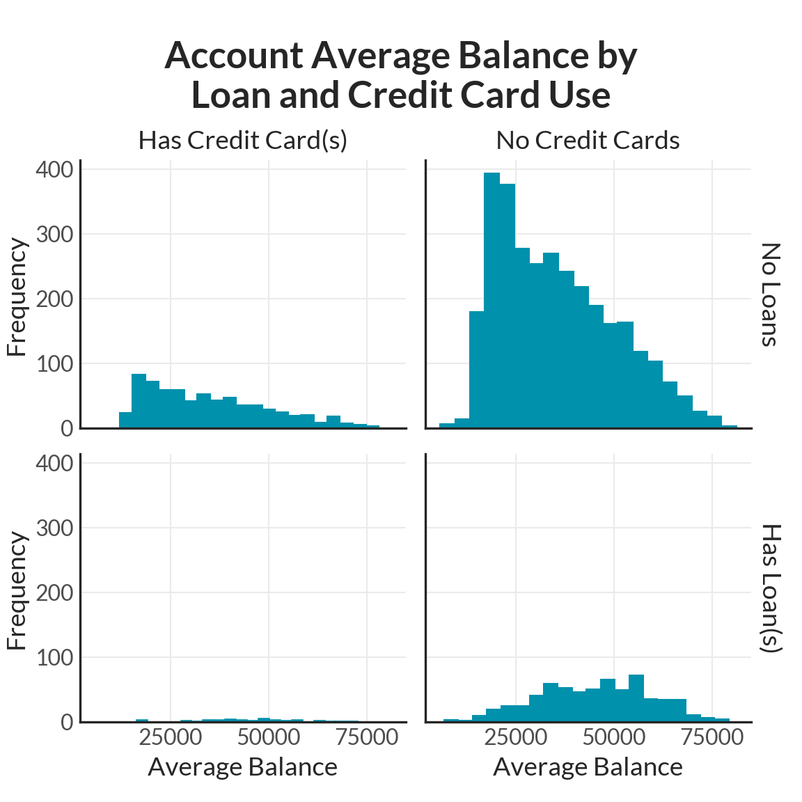
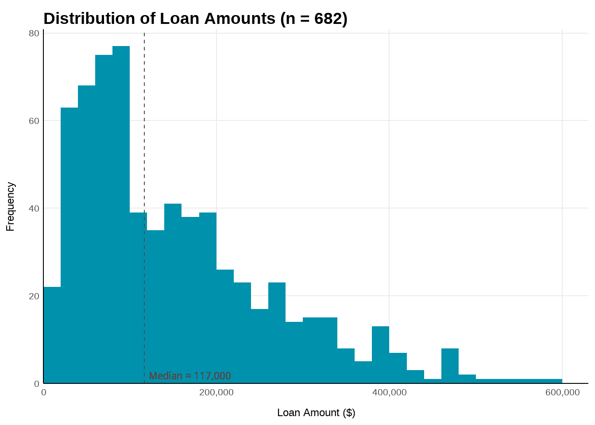
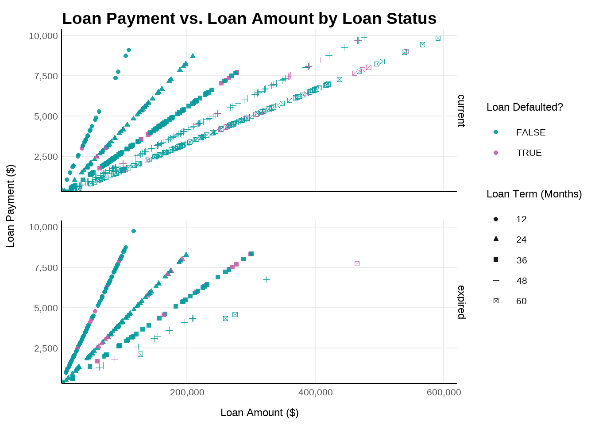
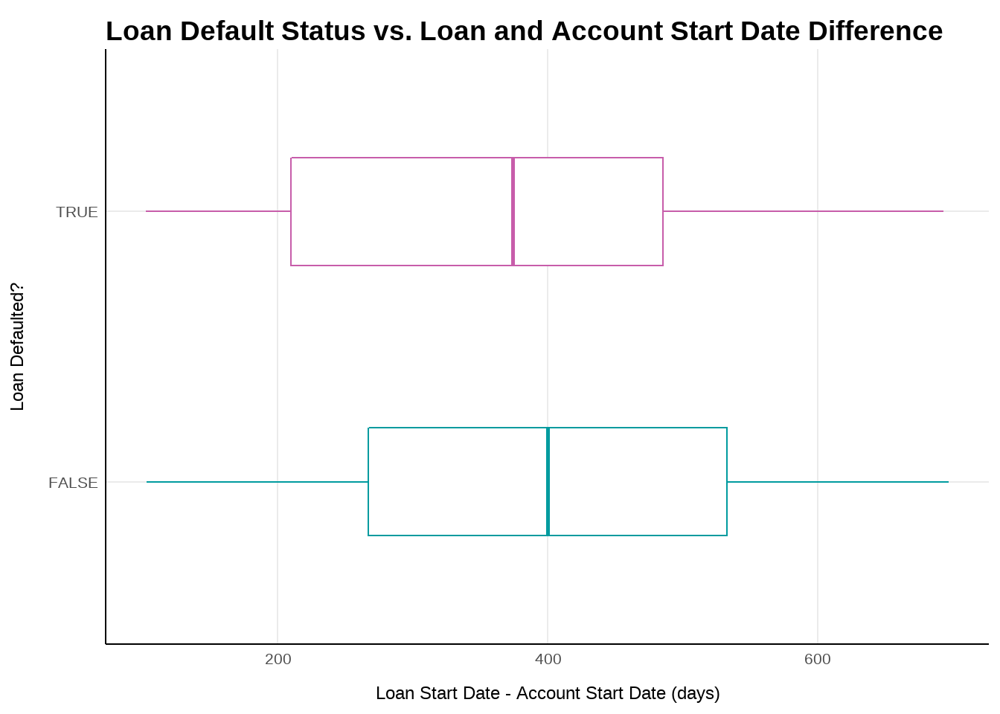
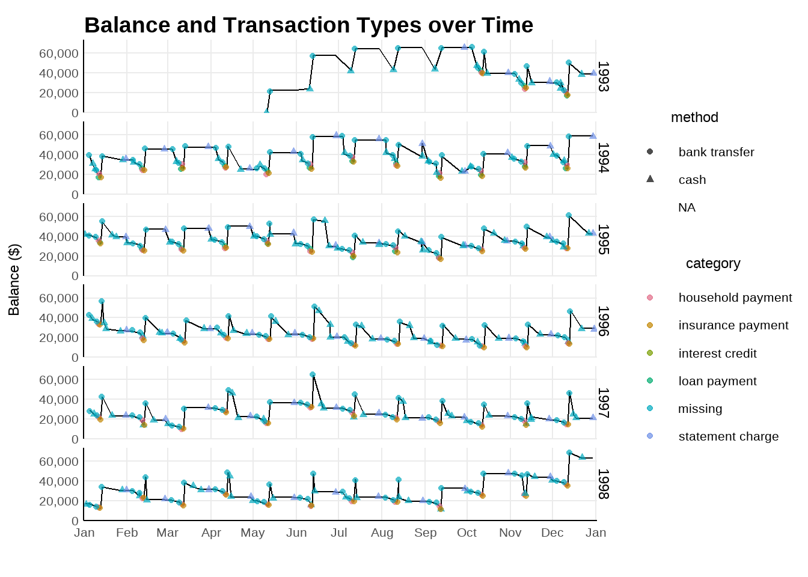
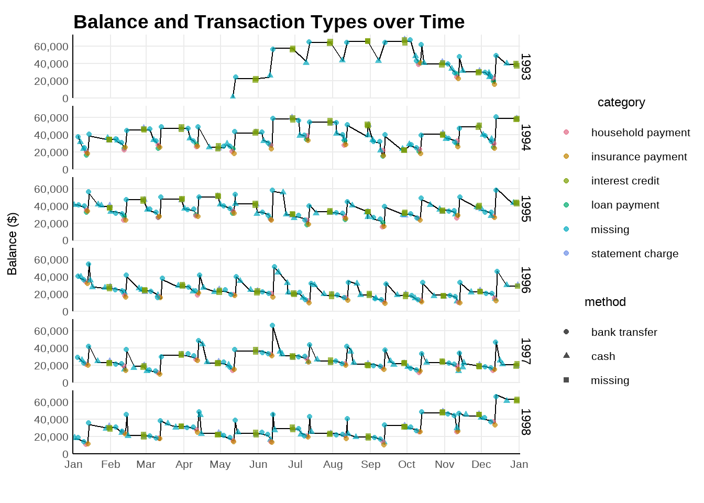
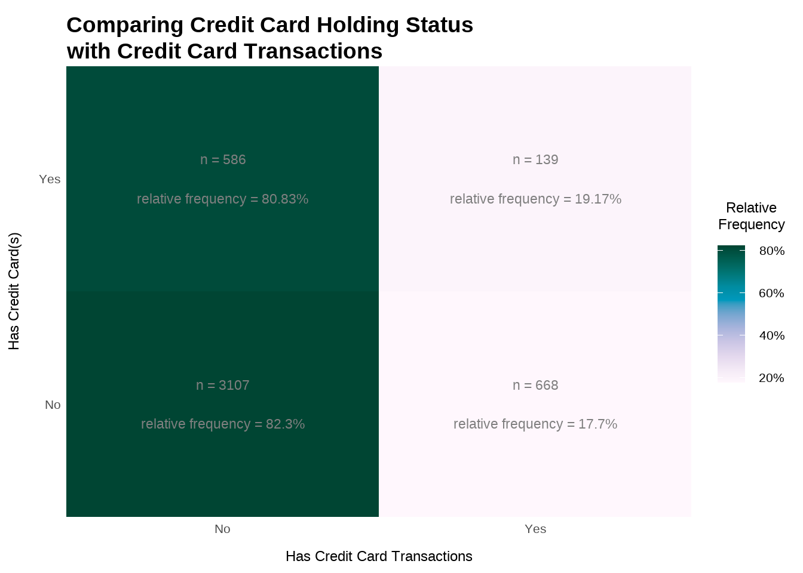

For this assignment, we received two datasets from a fake bank and were tasked with exploring various account characteristics and relationships between variables. Before jumping into the tasks, here is an overview of each dataset:
The transactions.csv contains all of the bank’s transactions.
| Field Name | Description |
|---|---|
id |
Unique record identifier |
account_id |
Account identifier |
date |
Transaction date |
type |
Debit or Credit |
amount |
Amount of transaction |
balance |
Account balance after the transaction is executed |
bank |
The two letter code of the other bank if the transaction is a bank transfer |
account |
The account number of the other bank if the transaction is a bank transfer |
method |
Method of transaction: can be bank transfer, cash, or credit card |
category |
What the transaction was for |
The accounts_analytical.csv file contains the following information for every account. There is one record per account. 4,500 rows and 64 columns.
| Field Name | Description |
|---|---|
account_id |
Account number |
acct_creation_date |
Date when account was opened |
statement_frequency |
The frequency that statements are generated for the account |
account_district |
Name of the district where the account is |
num_customers |
The total number of clients associated with the account (owner and users) |
credit_cards |
Number of credit cards for an account or zero if none |
loan_date |
The date the loan was issued |
loan_amount |
The amount of the loan |
loan_payment |
The amount of the loan payment |
loan_term |
The duration of loan in months |
loan_status |
The status of the loan (current or expired) |
loan_default |
T/F if the loan is in default |
max_withdrawal |
Maximum debit amount for the account |
min_withdrawal |
Minimum debit amount for the account |
max_balance |
Maximum balance for the account |
min_balance |
Minimum balance for the account |
credit_xxxxx_yyyyy_zzzzz |
Summary statistics for all types of credit type transactions where: * xxxxx can be: cash, bank transfer or other * yyyyy can be: pension benefit, interest credit, or other * zzzzz can be transaction count (txn_ct), transaction totals (txn_tot) or average transaction amount (avg_txn) |
debit_xxxxx_yyyyy_zzzzz |
Summary statistics for all types of debit type transactions where: * xxxxx can be: cash, bank transfer or credit card * yyyyy can be: household payment, insurance payment, loan payment, negative balance charge, statement charge, or other * zzzzz can be transaction count (txn_ct), transaction totals (txn_tot) or average transaction amount (avg_txn) |
pmt_order_ct |
Number of payment orders for the account |
pmt_order_avg_amt |
The average amount for the payment orders |
owner_client_id |
Client ID |
gender |
Client gender |
birth_date |
Client birth date |
owner_district |
Client district |
Explore all accounts. Create visualizations that combines these account characteristics:
- Whether an account has a credit card or not
- Whether an account has a loan or not
- The average balance for the account
I chose to use faceted histograms, so that I could quickly get a sense of how many accounts fell into each category and the general distribution of the average balances for each group.
We see that most accounts do not have credit cards or loans. Both groups with no loans are skewed right with their average balances, while the other groups are more symmetric.
If I could make additional graphs, I would allow the y-axis to be free, since it is hard to see the details of the group that has loans and credit cards. However, with only one graph allowed, I think it is more important to see how the number of accounts varies for each group.

What is the distribution of all loans and what are their characteristics?
I’m assuming “distribution of all loans” is referring to the distribution of loan amounts.
We see that the the distribution of loan amounts is right skewed with 50% of the accounts having loans between $0 - $117,000 and the other 50% between $117,000 - $600,000.

This plot shows the inherent linear relationship between the loan amount, payment, and term, since \[Payment = \frac{1}{Term} * Amount.\]
Before I made this plot, I thought that defaulted accounts may be clustered somehow, like those with higher amounts or shorter terms. However, there doesn’t seem to be a pattern to the defaulted accounts.

Is there a relationship between a good or bad loan and the time between an account is opened an the loan is created? Is there a specific set of accounts that seem to be at higher or lower risk of defaulting?
Looking at these boxplots, we see that the two groups of accounts have almost exactly the same range, but the IQR and median is slightly lower for defaulted accounts, so borrowers who get a loan soon after opening an account may be more likely to default.

For the account with the highest number of transactions, make a time series line plot for the behavior of the account over time, including all debits and credits, the different methods, and with the different categories.
I’m not exactly happy with this plot. I used a time series of the balance, so we could easily see the credits and debits as the line moves up and down. Then I added points that would show the category (using color) and method (using shape). Unfortunately, when the method was missing, those points were removed (first plot). But when I changed NA to ‘missing’ so that those points would show up (second plot), it seems like they covered up a lot of the statement charge points. I tried using jitter to make more points visible, but I don’t really like how it looks. Changing the transparency makes the points hard to discern, since there is a lot going on in this plot.
Let me know if you have any ideas for making this better!

Explore the validity of the data for the case whether or not an account has a credit card and whether or not they have associated credit card transactions. Is there anything worth noting?
I used a heatmap to quickly get a sense of the four groups of accounts. There is definitely a data validity issue, since 80% of the accounts that had at least one credit card didn’t have any credit card transactions. In addition, about 18% of the accounts that had no credit cards somehow still had credit card transactions
